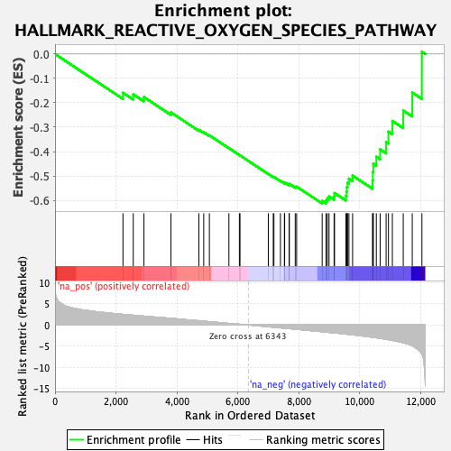
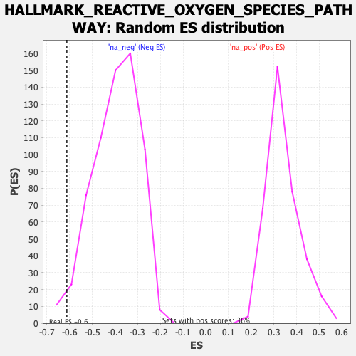

| | | Dataset | DE_t |
| Phenotype | NoPhenotypeAvailable |
| Upregulated in class | na_neg |
| GeneSet | HALLMARK_REACTIVE_OXYGEN_SPECIES_PATHWAY |
| Enrichment Score (ES) | -0.61296415 |
| Normalized Enrichment Score (NES) | -1.5490283 |
| Nominal p-value | 0.023400936 |
| FDR q-value | 0.015720492 |
| FWER p-Value | 0.206 |
Table: GSEA Results Summary

Fig 1: Enrichment plot: HALLMARK_REACTIVE_OXYGEN_SPECIES_PATHWAY
Profile of the Running ES Score & Positions of GeneSet Members on the Rank Ordered List
| SYMBOL | RANK IN GENE LIST | RANK METRIC SCORE | RUNNING ES | CORE ENRICHMENT | | 1 | MPO | 2231 | 2.492 | -0.1589 | No |
| 2 | GLRX | 2569 | 2.292 | -0.1653 | No |
| 3 | ERCC2 | 2920 | 2.085 | -0.1765 | No |
| 4 | HHEX | 3807 | 1.570 | -0.2396 | No |
| 5 | FES | 4724 | 1.002 | -0.3112 | No |
| 6 | MSRA | 4882 | 0.899 | -0.3208 | No |
| 7 | IPCEF1 | 5068 | 0.776 | -0.3336 | No |
| 8 | SCAF4 | 5709 | 0.364 | -0.3859 | No |
| 9 | LSP1 | 6053 | 0.173 | -0.4141 | No |
| 10 | JUNB | 6073 | 0.160 | -0.4156 | No |
| 11 | GCLC | 7003 | -0.421 | -0.4916 | No |
| 12 | ABCC1 | 7165 | -0.541 | -0.5037 | No |
| 13 | STK25 | 7187 | -0.558 | -0.5041 | No |
| 14 | ATOX1 | 7401 | -0.689 | -0.5198 | No |
| 15 | PRNP | 7531 | -0.766 | -0.5280 | No |
| 16 | G6PD | 7539 | -0.772 | -0.5262 | No |
| 17 | GSR | 7687 | -0.867 | -0.5353 | No |
| 18 | CAT | 7692 | -0.873 | -0.5325 | No |
| 19 | GPX3 | 7887 | -0.997 | -0.5445 | No |
| 20 | GLRX2 | 7933 | -1.028 | -0.5439 | No |
| 21 | TXNRD2 | 8771 | -1.605 | -0.6025 | Yes |
| 22 | LAMTOR5 | 8898 | -1.700 | -0.6011 | Yes |
| 23 | SBNO2 | 8940 | -1.731 | -0.5923 | Yes |
| 24 | GCLM | 8996 | -1.766 | -0.5841 | Yes |
| 25 | OXSR1 | 9162 | -1.880 | -0.5834 | Yes |
| 26 | NQO1 | 9177 | -1.891 | -0.5700 | Yes |
| 27 | PDLIM1 | 9551 | -2.154 | -0.5819 | Yes |
| 28 | TXNRD1 | 9574 | -2.172 | -0.5645 | Yes |
| 29 | PRDX4 | 9583 | -2.181 | -0.5458 | Yes |
| 30 | CDKN2D | 9605 | -2.200 | -0.5278 | Yes |
| 31 | HMOX2 | 9650 | -2.242 | -0.5110 | Yes |
| 32 | SOD1 | 9770 | -2.340 | -0.4985 | Yes |
| 33 | PRDX6 | 10425 | -2.908 | -0.5181 | Yes |
| 34 | SOD2 | 10436 | -2.920 | -0.4842 | Yes |
| 35 | NDUFA6 | 10451 | -2.929 | -0.4505 | Yes |
| 36 | PRDX2 | 10549 | -3.025 | -0.4212 | Yes |
| 37 | PRDX1 | 10674 | -3.149 | -0.3911 | Yes |
| 38 | GPX4 | 10871 | -3.373 | -0.3610 | Yes |
| 39 | NDUFS2 | 10947 | -3.470 | -0.3182 | Yes |
| 40 | NDUFB4 | 11076 | -3.654 | -0.2744 | Yes |
| 41 | MBP | 11433 | -4.216 | -0.2315 | Yes |
| 42 | TXN | 11729 | -4.907 | -0.1578 | Yes |
| 43 | PFKP | 12046 | -6.886 | 0.0091 | Yes |
Table: GSEA details [plain text format]

Fig 2: HALLMARK_REACTIVE_OXYGEN_SPECIES_PATHWAY: Random ES distribution
Gene set null distribution of ES for HALLMARK_REACTIVE_OXYGEN_SPECIES_PATHWAY